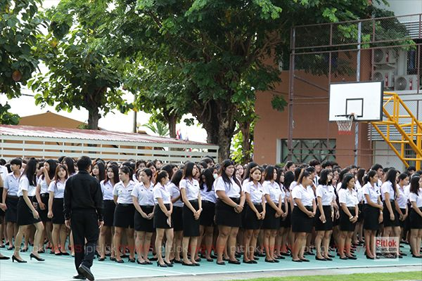

Phitsanulok Vocational College
About the College
| History : Phitsanulok Vocational College , formerly known as "school of sewing" Established on November 24,1938, at the Boom Boom School,
it was moved to its Present location at 60 60 Wang chan Road, Muang Phitsanulok, Phitsanulok Province. With an area of 18 rai 2 ngan 20 sq.wah
and renamed as asewing and ladie's garment factory in Phitsanulok Province in 1975, it was changged to Phitsanulok Vocational school
and 1976 were upgraded to Phitsanulok Vocational College Location : 60 Wang chan road ,Muang Phitsanulok,Phitsanulok 65000 Size : The area of 18 rai 2 ngan 20 sq.wah |

Students
| Phitsanulok Vocational college has about 3000 students.These are more girls than boys. The college has about 2200 or more girls.
Most of the students are from with in the provinces of Phitsanulok , Sukhothai and Petchabun. |

School Departments
- Business Computer
- Accounting
- Home Economic
- Arts
- Food and Nutrition
- Fashion and Textile
- General Education
- Information Technology
- Marketing
- Tourism and Hotel
Teachers
| Number | Name | Department |
| 1. | Aj.Tangmo | Business Computer |
| 2. | Aj.Tom | Business Computer |
| 3. | Aj.Honey | Business Computer |
| 4. | Aj.Kook | Business Computer |
| 5. | Aj.Pla | Business Computer |
| 6. | Aj.Waw | Business Computer |
| 7. | Aj.Ancha | Business Computer |
| 8. | Aj.Dong | Business Computer |
| 9. | Aj.Eid | Business Computer |
| 10. | Aj.Thongchai | Business Computer |